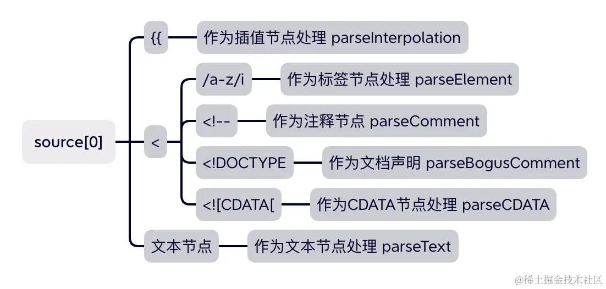
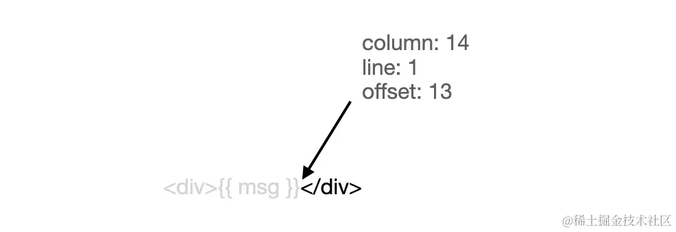

通过前面的小节，我们知道，组件的渲染成 vnode 的过程，其实就是组件的 render 函数调用执行的结果。但是我们写 Vue 项目时，经常会使用 <template> 的模版式写法，很少使用 render 函数的写法，那么 Vue 是如何实现从 模版 转成 render 函数的呢？
另外，关于模版编译成 render 函数的结果，也可以通过官方提供的 模版导出工具 现在调试编译结果。
Vue3 的核心编译源码文件在 packages/compiler-dom/src/index.ts 中：
js复制代码function compile(template, options = {}) {
return baseCompile(template, extend({}, parserOptions, options, {
nodeTransforms: [...DOMNodeTransforms, ...(options.nodeTransforms || [])],
directiveTransforms: extend({}, DOMDirectiveTransforms, options.directiveTransforms || {}),
transformHoist: null
}))
}
其核心调用的就是 baseCompile 函数，接下来一起看一下 baseCompile 的实现：
arduino复制代码export function baseCompile(template, options = {}) {
// 如果是字符串模版，则直接进行解析，转成 AST
const ast = isString(template) ? baseParse(template, options) : template
const [nodeTransforms, directiveTransforms] =
getBaseTransformPreset(prefixIdentifiers)
// AST 转换成 JS AST
transform(
ast,
extend({}, options, {
prefixIdentifiers,
nodeTransforms: [
...nodeTransforms,
...(options.nodeTransforms || []) // user transforms
],
directiveTransforms: extend(
{},
directiveTransforms,
options.directiveTransforms || {} // user transforms
)
})
)
// JS AST 生成代码
return generate(
ast,
extend({}, options, {
prefixIdentifiers
})
)
}
可以看到 baseCompile 函数核心就只有 3 步：
template 模版进行词法和语法分析，生成 ASTAST 转换成附有 JS 语义的 JavaScript ASTJavaScript AST 生成代码本小节着重来介绍下第一步
template 生成 AST一个简单的模版如下：
html复制代码<template>
<!-- 这是一段注释 -->
<p>{{ msg }}</p>
</template>
这个模版经过 baseParse 后转成的 AST 结果如下：
json复制代码{
"type": 0,
"children": [
{
"type": 3,
"content": " 这是一段注释 ",
"loc": {
"start": {
"column": 3,
"line": 2,
"offset": 3
},
"end": {
"column": 18,
"line": 2,
"offset": 18
},
"source": "<!-- 这是一段注释 -->"
}
},
{
"type": 1,
"ns": 0,
"tag": "p",
"tagType": 0,
"props": [],
"isSelfClosing": false,
"children": [
{
"type": 5,
"content": {
"type": 4,
"isStatic": false,
"constType": 0,
"content": "msg",
"loc": {
"start": {
"column": 9,
"line": 3,
"offset": 27
},
"end": {
"column": 12,
"line": 3,
"offset": 30
},
"source": "msg"
}
},
"loc": {
"start": {
"column": 6,
"line": 3,
"offset": 24
},
"end": {
"column": 15,
"line": 3,
"offset": 33
},
"source": "{{ msg }}"
}
}
],
"loc": {
"start": {
"column": 3,
"line": 3,
"offset": 21
},
"end": {
"column": 19,
"line": 3,
"offset": 37
},
"source": "<p>{{ msg }}</p>"
}
}
],
"helpers": [],
"components": [],
"directives": [],
"hoists": [],
"imports": [],
"cached": 0,
"temps": 0,
"loc": {
"start": {
"column": 1,
"line": 1,
"offset": 0
},
"end": {
"column": 1,
"line": 4,
"offset": 38
},
"source": "\n <!-- 这是一段注释 -->\n <p>{{ msg }}</p>\n"
}
}
其中有一个 type 字段，用来标记 AST 节点的类型，这里涉及到的枚举如下：
js复制代码export const enum NodeTypes {
ROOT, // 0 根节点
ELEMENT, // 1 元素节点
TEXT, // 2 文本节点
COMMENT, // 3 注释节点
SIMPLE_EXPRESSION, // 4 表达式
INTERPOLATION, // 5 插值节点
// ...
}
另外，props 描述的是节点的属性，loc 代表的是节点对应的代码相关信息，包括代码的起始位置等等。
有了上面的一些基础知识，我们来看看生成 AST 的核心算法：
js复制代码export function baseParse(content, options) {
// 创建解析上下文
const context = createParserContext(content, options)
// 获取起点位置
const start = getCursor(context)
// 创建 AST
return createRoot(
parseChildren(context, TextModes.DATA, []),
getSelection(context, start)
)
}
其中创建解析上下文得到的 context 的过程：
js复制代码function createParserContext(content, options) {
return {
options: extend({}, defaultParserOptions, options),
column: 1,
line: 1,
offset: 0,
// 存储原始模版内容
originalSource: content,
source: content,
inPre: false,
inVPre: false
}
}
createParserContext 本质就是返回了一个 context 对象，用来标记解析过程中的上下文内容。
接下来我们核心需要分析的是 parseChildren 函数，该函数是生成 AST 的核心函数。通过函数调用我们大致清楚该函数传入了初始化生成的 context 对象，context 对象中包含我们初始的模版内容，存储在 originalSource 和 source 中。
先来看看 parseChildren 对节点内容解析的过程：
js复制代码function parseChildren(context, mode, ancestors) {
// 获取父节点
const parent = last(ancestors)
const ns = parent ? parent.ns : Namespaces.HTML
const nodes: TemplateChildNode[] = []
// 判断是否到达结束位置，遍历结束
while (!isEnd(context, mode, ancestors)) {
// template 中的字符串
const s = context.source
let node = undefined
// 如果 mode 是 DATA 和 RCDATA 模式
if (mode === TextModes.DATA || mode === TextModes.RCDATA) {
// 处理 {{ 开头的情况
if (!context.inVPre && startsWith(s, context.options.delimiters[0])) {
// '{{'
node = parseInterpolation(context, mode)
} else if (mode === TextModes.DATA && s[0] === '<') {
// 以 < 开头且就一个 < 字符
if (s.length === 1) {
emitError(context, ErrorCodes.EOF_BEFORE_TAG_NAME, 1)
} else if (s[1] === '!') {
// 以 <! 开头的情况
if (startsWith(s, '<!--')) {
// 如果是 <!-- 这种情况，则按照注释节点处理
node = parseComment(context)
} else if (startsWith(s, '<!DOCTYPE')) {
// 如果是 <!DOCTYPE 这种情况
node = parseBogusComment(context)
} else if (startsWith(s, '<![CDATA[')) {
// 如果是 <![CDATA[ 这种情况
if (ns !== Namespaces.HTML) {
node = parseCDATA(context, ancestors)
} else {
emitError(context, ErrorCodes.CDATA_IN_HTML_CONTENT)
node = parseBogusComment(context)
}
} else {
// 都不是的话，则报错
emitError(context, ErrorCodes.INCORRECTLY_OPENED_COMMENT)
node = parseBogusComment(context)
}
} else if (s[1] === '/') {
// 以 </ 开头，并且只有 </ 的情况
if (s.length === 2) {
emitError(context, ErrorCodes.EOF_BEFORE_TAG_NAME, 2)
} else if (s[2] === '>') {
// </> 缺少结束标签，报错
emitError(context, ErrorCodes.MISSING_END_TAG_NAME, 2)
advanceBy(context, 3)
continue
} else if (/[a-z]/i.test(s[2])) {
// 文本中存在多余的结束标签的情况 </p>
emitError(context, ErrorCodes.X_INVALID_END_TAG)
parseTag(context, TagType.End, parent)
continue
} else {
emitError(
context,
ErrorCodes.INVALID_FIRST_CHARACTER_OF_TAG_NAME,
2
)
node = parseBogusComment(context)
}
} else if (/[a-z]/i.test(s[1])) {
// 解析标签元素节点
node = parseElement(context, ancestors)
} else if (s[1] === '?') {
emitError(
context,
ErrorCodes.UNEXPECTED_QUESTION_MARK_INSTEAD_OF_TAG_NAME,
1
)
node = parseBogusComment(context)
} else {
emitError(context, ErrorCodes.INVALID_FIRST_CHARACTER_OF_TAG_NAME, 1)
}
}
}
if (!node) {
// 解析普通文本节点
node = parseText(context, mode)
}
if (isArray(node)) {
for (let i = 0; i < node.length; i++) {
pushNode(nodes, node[i])
}
} else {
pushNode(nodes, node)
}
}
}
上述代码量虽然挺多，但整体要做的事情还是比较明确和清晰的。从上述代码中可以看到，Vue 在解析模板字符串时，可分为两种情况：以 < 开头的字符串和不以 < 开头的字符串。
其中，不以 < 开头的字符串有两种情况：它是文本节点或 {{ exp }} 插值表达式。
而以 < 开头的字符串又分为以下几种情况：
<div><!-- 123 --><!DOCTYPE html><![CDATA[<]]>
接下来我们介绍几个比较重要的解析器。
根据前面的描述，我们知道当遇到字符串 {{msg}} 的时候，会把当前代码当做是插值节点来解析，进入 parseInterpolation 函数体内：
js复制代码function parseInterpolation(context, mode) {
// 从配置中获取插值开始和结束分隔符，默认是 {{ 和 }}
const [open, close] = context.options.delimiters
// 获取结束分隔符的位置
const closeIndex = context.source.indexOf(close, open.length)
// 如果不存在结束分隔符，则报错
if (closeIndex === -1) {
emitError(context, ErrorCodes.X_MISSING_INTERPOLATION_END)
return undefined
}
// 获取开始解析的起点
const start = getCursor(context)
// 解析位置移动到插值开始分隔符后
advanceBy(context, open.length)
// 获取插值起点位置
const innerStart = getCursor(context)
// 获取插值结束位置
const innerEnd = getCursor(context)
// 插值原始内容的长度
const rawContentLength = closeIndex - open.length
// 插值原始内容
const rawContent = context.source.slice(0, rawContentLength)
// 获取插值的内容，并移动位置到插值的内容后
const preTrimContent = parseTextData(context, rawContentLength, mode)
const content = preTrimContent.trim()
// 如果存在空格的情况，需要计算偏移值
const startOffset = preTrimContent.indexOf(content)
if (startOffset > 0) {
// 更新插值起点位置
advancePositionWithMutation(innerStart, rawContent, startOffset)
}
// 如果尾部存在空格的情况
const endOffset =
rawContentLength - (preTrimContent.length - content.length - startOffset)
// 也需要更新尾部的位置
advancePositionWithMutation(innerEnd, rawContent, endOffset)
// 移动位置到插值结束分隔符后
advanceBy(context, close.length)
return {
type: NodeTypes.INTERPOLATION,
content: {
type: NodeTypes.SIMPLE_EXPRESSION,
isStatic: false,
// Set `isConstant` to false by default and will decide in transformExpression
constType: ConstantTypes.NOT_CONSTANT,
content,
loc: getSelection(context, innerStart, innerEnd)
},
loc: getSelection(context, start)
}
}
这里大量使用了一个重要函数 advanceBy(context, numberOfCharacters)。其功能是更新解析上下文 context 中的 source 来移动代码解析的位置，同时更新 offset、line、column 等和代码位置相关的属性，这样来达到一步步 蚕食 模版字符串的目的，从而达到对整个模版字符chuancontext 是字符串的上下文对象，numberOfCharacters 是要前进的字符数。
针对这样一段代码：
html复制代码<div>{{ msg }}<div>
调用 advance(s, 14) 函数，得到结果：

可以看到，parseInterpolation 函数本质就是通过插值的开始标签{{ 和结束标签 }} 找到插值的内容 content。然后再计算插值的起始位置，接着就是前进代码到插值结束分隔符后，表示插值部分代码处理完毕，可以继续解析后续代码了。
最后返回一个描述插值节点的 AST 对象，其中，loc 记录了插值的代码开头和结束的位置信息，type 表示当前节点的类型，content 表示当前节点的内容信息。
针对源代码起点位置的字符不是 < 或者 {{ 时，则当做是文本节点处理，调用 parseText 函数：
js复制代码function parseText(context, mode) {
// 文本结束符
const endTokens = mode === TextModes.CDATA ? [']]>'] : ['<', context.options.delimiters[0]]
let endIndex = context.source.length
// 遍历文本结束符，匹配找到结束的位置
for (let i = 0; i < endTokens.length; i++) {
const index = context.source.indexOf(endTokens[i], 1)
if (index !== -1 && endIndex > index) {
endIndex = index
}
}
const start = getCursor(context)
// 获取文本的内容，并前进代码到文本的内容后
const content = parseTextData(context, endIndex, mode)
return {
type: NodeTypes.TEXT,
content,
loc: getSelection(context, start)
}
}
parseText 函数整体功能还是比较简单的，如果一段文本，在 CDATA 模式下，当遇到 ]]> 即为结束位置，否则，都是在遇到 < 或者插值分隔符 {{ 结束。所以通过遍历这些结束符，匹配并找到文本结束的位置。
找到文本结束位置后，就可以通过 parseTextData 函数来获取到文本的内容并前进到文本内容后。
最后返回一个文本节点的 AST 对象。
当起点字符是 < 开头，且后续字符串匹配 /[a-z]/i 正则表达式，则会进入 parseElement 的节点解析函数：
js复制代码function parseElement(context, ancestors) {
// ...
// 开始标签
// 获取当前元素的父标签节点
const parent = last(ancestors)
// 解析开始标签，生成一个标签节点，并前进代码到开始标签后
const element = parseTag(context, TagType.Start, parent)
// 如果是自闭和标签，直接返回标签节点
if (element.isSelfClosing || context.options.isVoidTag(element.tag)) {
return element
}
// 下面是处理子节点的逻辑
// 先把标签节点添加到 ancestors，入栈
ancestors.push(element)
const mode = context.options.getTextMode(element, parent)
// 递归解析子节点，传入 ancestors
const children = parseChildren(context, mode, ancestors)
// 子节点解析完成 ancestors 出栈
ancestors.pop()
// ...
element.children = children
// 结束标签
if (startsWithEndTagOpen(context.source, element.tag)) {
// 解析结束标签，并前进代码到结束标签后
parseTag(context, TagType.End, parent)
} else {
// ...
}
// 更新标签节点的代码位置，结束位置到结束标签后
element.loc = getSelection(context, element.loc.start)
return element
}
可以看到，parseElement 主要做了三件事情：解析开始标签，解析子节点，解析闭合标签。
在解析子节点过程中， Vue 会用一个栈 ancestors 来保存解析到的元素标签。当它遇到开始标签时，会将这个标签推入栈，遇到结束标签时，将刚才的标签弹出栈。它的作用是保存当前已经解析了，但还没解析完的元素标签。这个栈还有另一个作用，在解析到某个字节点时，通过 ancestors[ancestors.length - 1] 可以获取它的父元素。
举个例子：
html复制代码<div class="app">
<p>{{ msg }}</p>
一个文本节点
</div>
从我们的示例来看，它的出入栈顺序是这样的：
less复制代码[] // 刚开始时空栈
[div] // div 入栈
[div, p] // p 入栈
[div] // p 节点解析完成，出栈
[] // div 节点解析完成，出栈
另外，在解析开始标签和解析闭合标签时，都用到了一个 parseTag 函数，这也是节点标签解析的核心函数：
js复制代码function parseTag(context, type, parent) {
const start = getCursor(context)
// 匹配标签文本结束的位置
const match = /^</?([a-z][^\t\r\n\f />]*)/i.exec(context.source)!
const tag = match[1]
const ns = context.options.getNamespace(tag, parent)
// 前进代码到标签文本结束位置
advanceBy(context, match[0].length)
// 前进代码到标签文本后面的空白字符后
advanceSpaces(context)
// 解析标签中的属性，并前进代码到属性后
let props = parseAttributes(context, type)
// ...
// 标签闭合.
let isSelfClosing = false
if (context.source.length === 0) {
emitError(context, ErrorCodes.EOF_IN_TAG)
} else {
// 判断是否自闭合标签
isSelfClosing = startsWith(context.source, '/>')
// 结束标签不应该是自闭和标签
if (type === TagType.End && isSelfClosing) {
emitError(context, ErrorCodes.END_TAG_WITH_TRAILING_SOLIDUS)
}
// 前进代码到闭合标签后
advanceBy(context, isSelfClosing ? 2 : 1)
}
// 闭合标签，则退出
if (type === TagType.End) {
return
}
let tagType = ElementTypes.ELEMENT
if (!context.inVPre) {
// 接下来判断标签类型，是组件、插槽还是模板
if (tag === 'slot') {
tagType = ElementTypes.SLOT
} else if (tag === 'template') {
if (
props.some(
p =>
p.type === NodeTypes.DIRECTIVE && isSpecialTemplateDirective(p.name)
)
) {
tagType = ElementTypes.TEMPLATE
}
} else if (isComponent(tag, props, context)) {
tagType = ElementTypes.COMPONENT
}
}
return {
type: NodeTypes.ELEMENT,
ns,
tag,
tagType,
props,
isSelfClosing,
children: [],
loc: getSelection(context, start),
codegenNode: undefined // to be created during transform phase
}
}
parseTag 函数首先会匹配标签的文本的节点信息，比如
<div class="test">{{ msg }}</div>得到的 match 信息如下：
js复制代码[
'<div',
'div',
index: 0,
input: '<div class="test">{{ msg }}</div>\n',
groups: undefined
]
然后将代码前进到节点信息后，再通过 parseAttributes 函数来解析标签中的 props 属性，比如 class、style 等等。
接下来再去判断是不是一个自闭和标签，并前进代码到闭合标签后；
最后根据 tag 判断标签类型，是组件、插槽还是模板。
parseTag 完成后，最终就是返回一个节点描述的 AST 对象，如果有子节点，会继续进入 parseChildren 的递归流程，不断更新节点的 children 对象。
有了上面的介绍，我们来看一个简单的 demo 来理解 AST 创建的过程。针对以下模版：
html复制代码<div class="test">
{{ msg }}
<p>这是一段文本</p>
</div>
我们来演示一下创建过程：
首先进入 parseChildren 遇到 <div 标签，进入 parseElement 函数，parseElement 函数通过 parseTag 函数得到 element 的数据结构为：
json复制代码{
"type": 1, // 标签节点
"ns": 0,
"tag": "div",
"tagType": 0,
"props": [
{
"type": 6,
"name": "class",
"value": {
// ...
},
"loc": {
// ...
}
}
],
"isSelfClosing": false,
"children": [],
"loc": {
"start": {
"column": 3,
"line": 2,
"offset": 3
},
"end": {
"column": 21,
"line": 2,
"offset": 21
},
"source": "<div class="test">"
}
}
此时的 context 经过 advanceBy 操作后，内容为：
json复制代码{
"options": {
// ...
},
"column": 18,
"line": 1,
"offset": 18,
"originalSource": "<div class="test">\n {{ msg }}\n <p>这是一段文本</p>\n </div>\n",
"source": "\n {{ msg }}\n <p>这是一段文本</p>\n </div>\n",
"inPre": false,
"inVPre": false
}
然后再进入 parseChildren 流程，此时的 source 内容如下：
html复制代码 {{ msg }}
<p>这是一段文本</p>
</div>
此时的开始标签是 {{ 所以进入插值解析的函数 parseInterpolation，该函数执行完成后得到的 source 结果如下：
html复制代码 <p>这是一段文本</p>
</div>
这里关于
AST内容就会包含插值节点的信息描述。context内容则会在parseInterpolation后继续更新，执行后续source的内容坐标，这里不再赘述
在完成，插值节点解析后，在 parseChildren 内存在一个 while 判断：while (!isEnd(context, mode, ancestors))，因为还未到达闭合标签的位置，所以接着进入 p 标签的解析 parseElement。解析完成后得到source 内容如下：
html复制代码 这是一段文本</p>
</div>
此时继续进入 parseChildren 递归。
然后遇到的了文本开头的内容，会进入 parseText 文本解析的流程，完成 parseText 后，得到的 source 内容如下：
html复制代码</p>
</div>
此时 while 退出循环，进入 parseTag 继续解析闭合标签，首先是 </p> 标签，因为不是自闭和标签，则继续更新 content 后，然后更新标签节点的代码位置，最后得到的 source 如下：
html复制代码</div>
最后再继续解析闭合标签 </div> 更新 content和标签节点div的代码位置，直到结束。